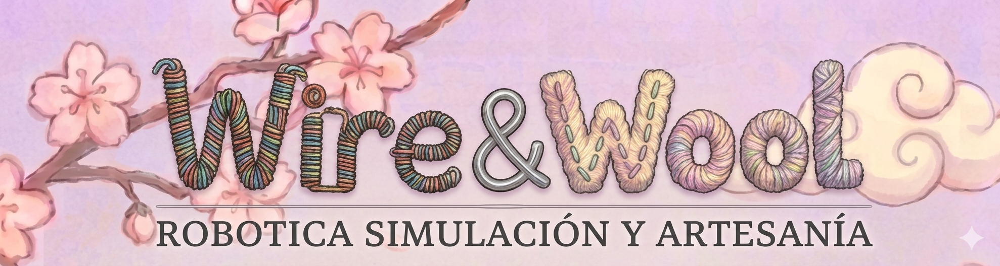
Sistema de Control Integral para Brazo Robótico
Gemelo Digital en Ursina Engine, Visión Artificial (MediaPipe) y Arquitectura Multimodal con PySide6
Resumen del Proyecto
El presente proyecto detalla el diseño, desarrollo e implementación de un sistema robótico integral de 6 grados de libertad (6 DOF), caracterizado por una arquitectura de control multimodal y un entorno de simulación tridimensional. A diferencia de los controladores robóticos convencionales, este sistema propone un ecosistema híbrido que fusiona el hardware físico con un Gemelo Digital desarrollado en Ursina Engine, permitiendo la sincronización bidireccional mediante protocolos de comunicación de baja latencia (UDP Sockets).
La unidad central de control, desarrollada en Python (PySide6), permite la gestión del brazo de manera clara e intuitiva. El desarrollo se apoya en una metodología de Investigación y Desarrollo (R&D) apoyado de herramientas de integigencia Artificial. El proyecto se distribuye bajo una licencia de código abierto (MIT) lo cual significa que cualquiera puede desgargar y modificar el proyecto segun sus requerimietos de manera completamente libre.
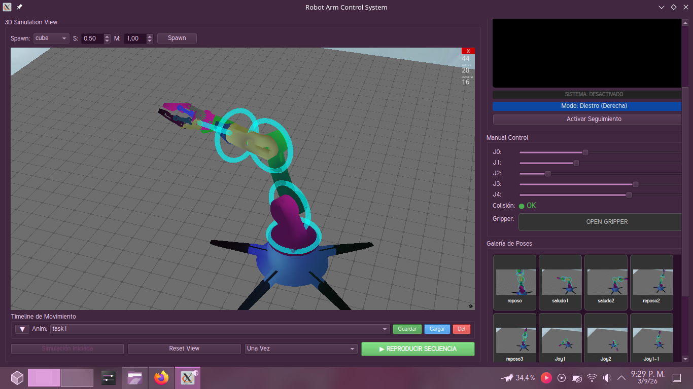
1. Objetivos
Objetivo General
Diseñar e implementar un sistema integral de control para un brazo robótico de 6 grados de libertad (6 DOF), que permita la manipulación precisa mediante una interfaz gráfica avanzada el cual sea ituitivo y facil de usar y simulación digital en tiempo real y control por medio de Joypads ademas de la posivilidad de usar un control biométrico basado en visión artificial por camara.
Objetivos Específicos
- Desarrollar una interfaz de usuario (GUI) multiplataforma utilizando PySide6.
- Implementar un motor de simulación 3D con Ursina Engine como gemelo digital.
- Establecer un protocolo de comunicación serial eficiente entre el software y el microcontrolador.
- Crear un sistema de persistencia y galería de poses con un timeline de animación.
2. Justificación del Proyecto
se ofrece una herramienta educativa y técnica que permite previsualizar los movimientos DEL ROBOT antes de ejecutarlos en el hardware real, minimizando riesgos de colisión y facilitando la programación de tareas complejas mediante una línea de tiempo interactiva. El proyecto ha sido concebido bajo la filosofía de Código Abierto (Open Source), permitiendo que la comunidad técnica pueda estudiar, modificar y mejorar el sistema.
Desarrollado bajo la filosofía de Código Abierto (Open Source), la arquitectura se basa en un modelo de Licenciamiento Híbrido Permisivo (PySide6 LGPL v3, Ursina MIT, MediaPipe Apache 2.0) garantiza su libre distribucion
3. Desarrollo o Cuerpo del Proyecto
3.1 Metodología de Desarrollo
El proceso de R&D se fundamentó en Ingeniería Asistida por IA, Programación Agéntica y "Vibe Coding" La IA actuó como coprogramador y arquitecto de software, permitiendo enfocarse en la lógica del sistema y la integración de hardware más que en la codificación manual de bajo nivel
3.2 Componentes del Sistema
El hardware está basado en el modelo "Fabri Creator" de 6 DOF con modificaciones
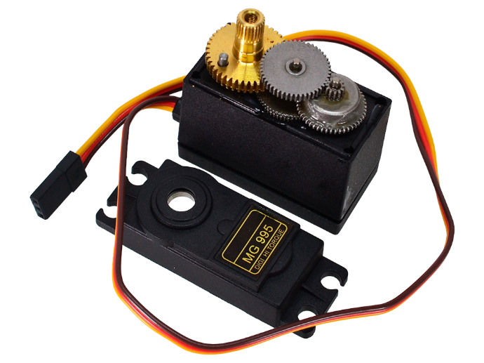
Imagen N°7: Actuadores (Servomotores MG995)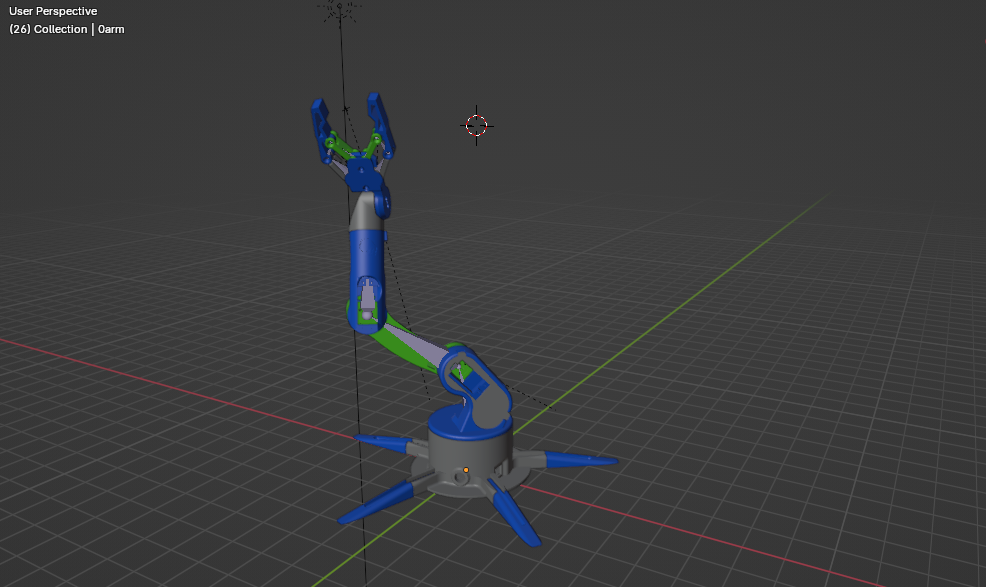
Imagen N°14: Modelo 3D (Blender)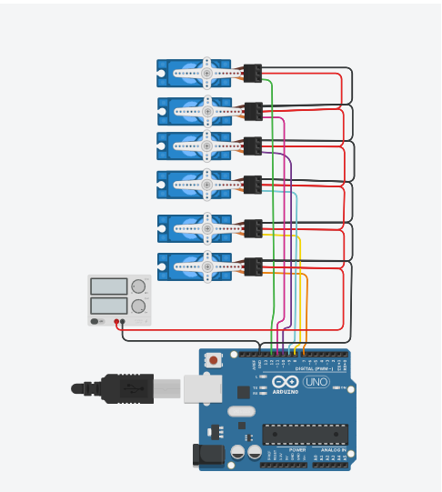
Imagen N°10: Diagrama de Conexión BásicaFirmware
El microcontrolador actúa como nodo esclavo interpretando comandos seriales a 115200 baudios. Mapea los ángulos recibidos (0° - 180°) y posiciona los servomotores mediante Servo.h
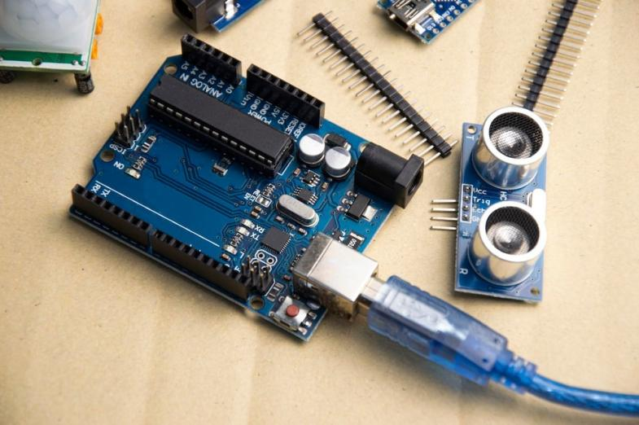
Arduino UNO y módulosCódigo Arduino (Resumido)
#include <Servo.h>
Servo s1, s2, s3, s4, s5, s6, grip;
void setup() {
Serial.begin(115200);
s1.attach(7); s2.attach(8); s3.attach(9);s4.attach(10); s5.attach(11); s6.attach(12);grip.attach(6);
// Posición inicial
s1.write(90);s2.write(90);s3.write(90);s4.write(90);s5.write(90);s6.write(90);grip.write(0);
delay(500);
}
void loop() {
if (Serial.available()) {
String data = Serial.readStringUntil('\n');
int v[7];
separar_valores_por_coma(v,data);
// verificar que el arduino tenga el programa correcto
if (data == "?") {
Serial.println("ID:ARM_ROBOT");//retorna identificador del robot
return;
}
// Control de ejes
if (idx >= 6) {
s1.write(fixAngle(0, constrain(v[0], 0, 180)));s2.write(fixAngle(1, constrain(v[1], 0, 180))); s3.write(fixAngle(2, constrain(v[2], 0, 180)));s4.write(fixAngle(3, constrain(v[3], 0, 180))); s5.write(fixAngle(4, constrain(v[4], 0, 180)));s6.write(fixAngle(5, constrain(v[5], 0, 180)));
Serial.println("ACK");//comando valido
} else {
Serial.println("ERROR");
}
}
}Software e Interfaz Gráfica (GUI)
La interfaz en Python (PySide6) incluye diales, visualización en tiempo real, manipulación de objetos virtuales en Ursina Engine y comunicación por Sockets UDP de baja latencia .
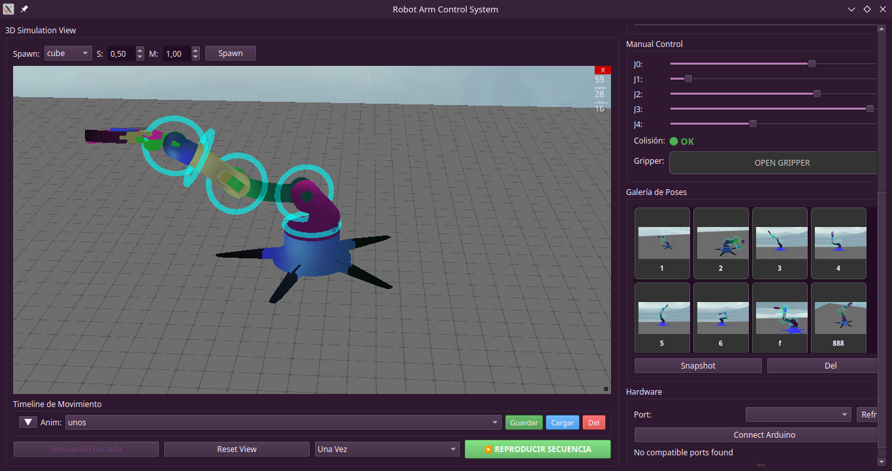
Imagen N°11: Interfaz Grafica de Control GUI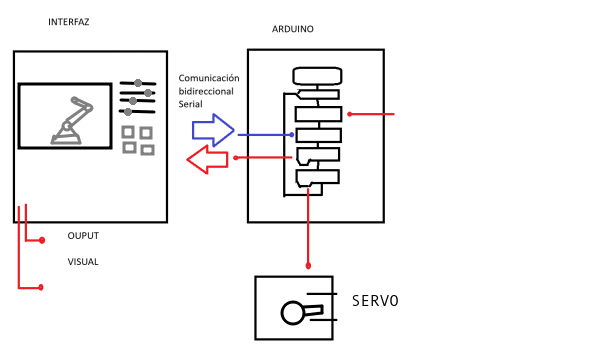
Imagen N°12: Diagrama de Funcionamiento Interfaz-ArduinoFabricación No Convencional: "Brazo Amigurumi"
Dada la indisponibilidad de impresión 3D, se optó por el tejido técnico mediante la técnica de Amigurumi (Crochet), alineándose con los principios de Soft Robotics .donde la flexibilidad del material permite una mayor tolerancia a impactos y una interacción más segura con humanos
5. Innovación
Simbiosis Hombre-IA y Programación Agéntica
El uso de metodologías agénticas para la programación y el desarrollo permitió romper los límites del conocimiento técnico inicial, logrando un sistema complejo que, de otro modo, habría requerido de un equipo multidisciplinario compuesto por varios programadores y diseñadores.
Manufactura Textil Sustentable
El método de usar fabricación artesanal por medio de textiles demuestra ser ecoamigable y sostenible, dado que no utiliza plásticos de un solo uso o filamentos derivados del petróleo que dañan el medio ambiente, superando las limitaciones tradicionales de la impresión 3D y perimitiendo la reducción de costos .
6. Impacto Productivo, Social o Educativo
Educativo
Plataforma STEM integral para el aprendizaje de cinemática, visión artificial y desarrollo HMI
Productivo
Teleoperación segura, prototipado de bajo costo y automatización CNC
Social & Ambiental
Democratización tecnológica, asistencia biométrica y reducción de huella de carbono mediante textiles .
7. Conclusiones
- Se validó el desarrollo asistido por IA (Programación Agéntica) para alcanzar sistemas a un nivel profesional
- La implementación del Gemelo Digital redujo los riesgos de colisión y desgaste mecánico
- Se demostró que la rigidez absoluta no es indispensable para prototipos de robótica educativa mediante la estructura tejida
8. Anexos
Pinout y Montaje
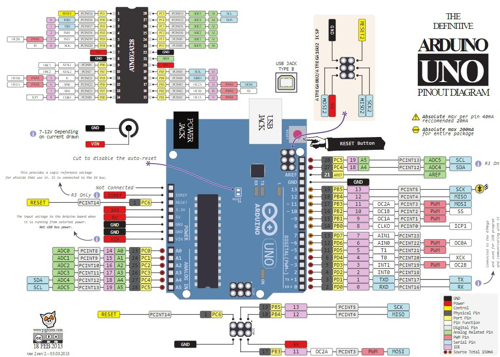
Imagen N°16: Pinout Arduino UNO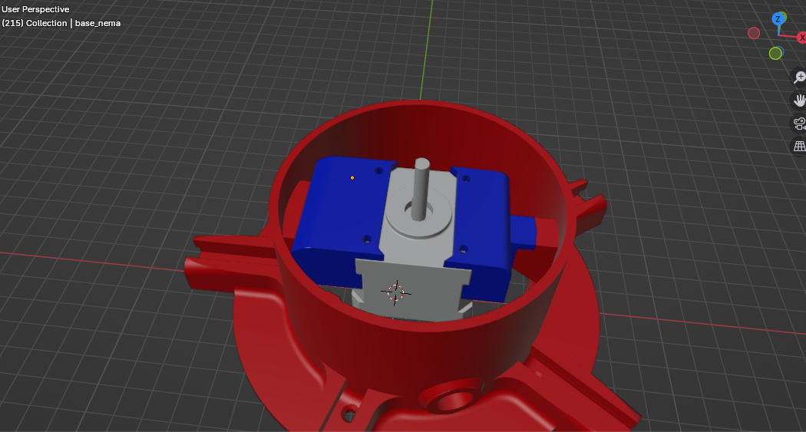
Imagen N°18: Modificación al Modelo 3D orgininal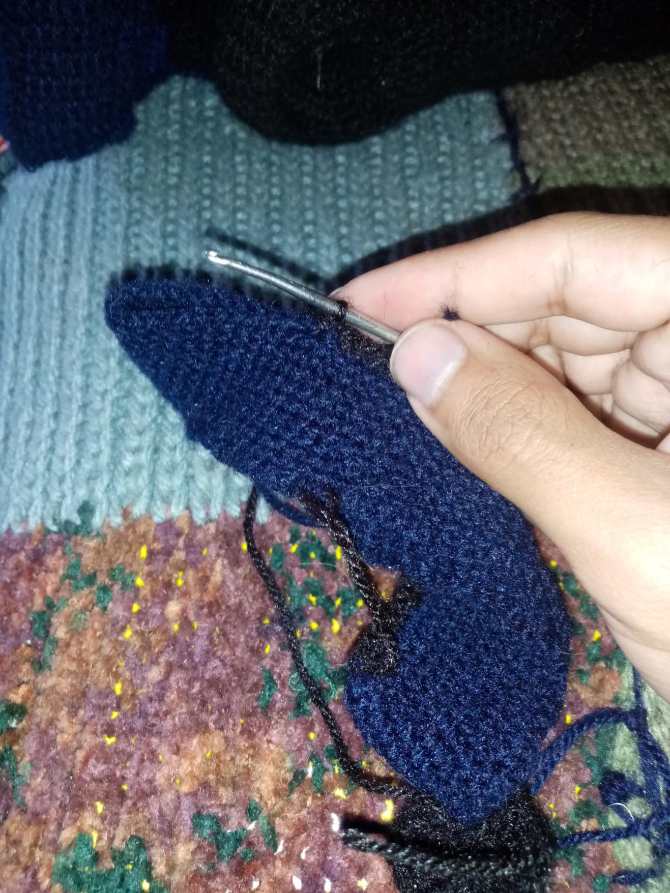
Imagen N°19: Montaje Tejido Amigurumi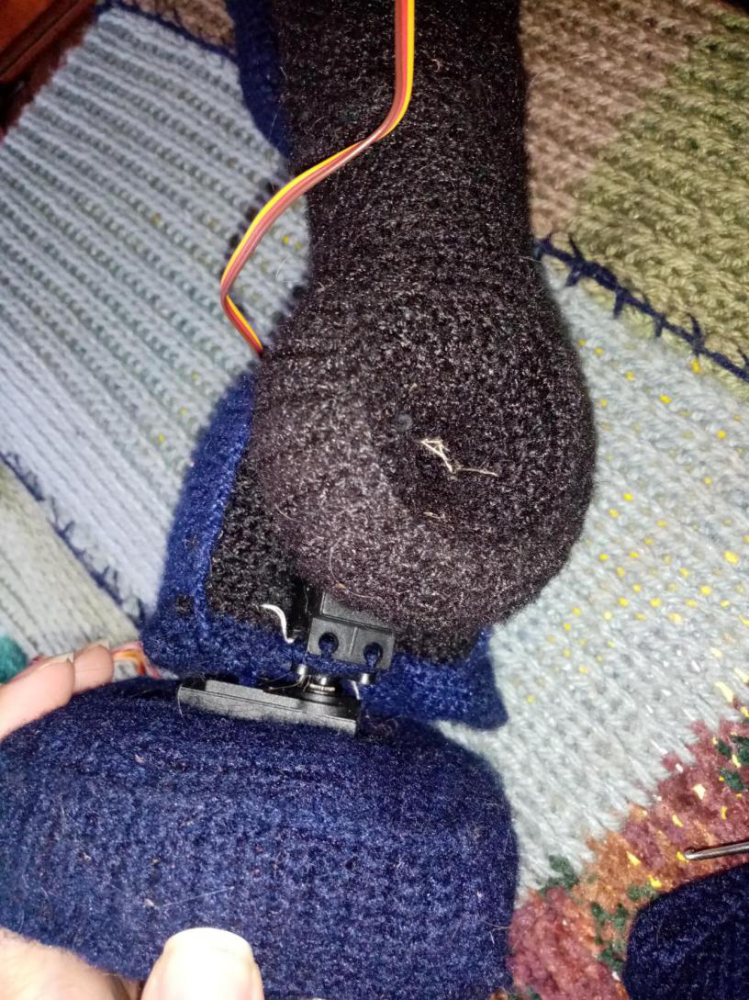
Imagen N°20: Montaje Tejido Amigurumi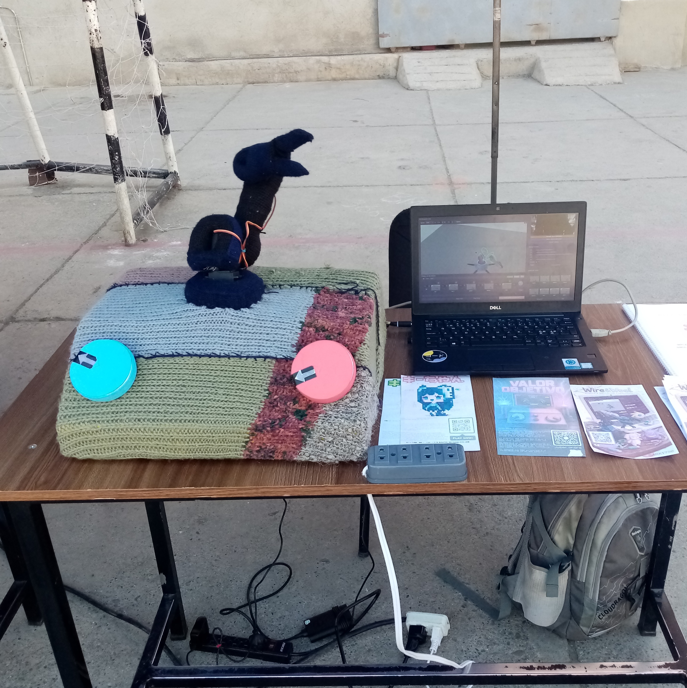
Imagen N°21: Montaje final en la feria institucional9. Bibliografía
- djarky. (2025). Controlador principal para brazo robótico 6-DOF. GitHub: github.com/djarky/robot-arm
- Google. (s.f.). MediaPipe Solutions Guide. ai.google.dev
- The Ursina Team. (s.f.). Ursina Engine Documentation. ursinaengine.org
- Qt Group. (2025). PySide6 Reference Documentation. doc.qt.io
- Rus, D., & Tolley, M. T. (2015). Design, fabrication and control of soft robots. Nature .